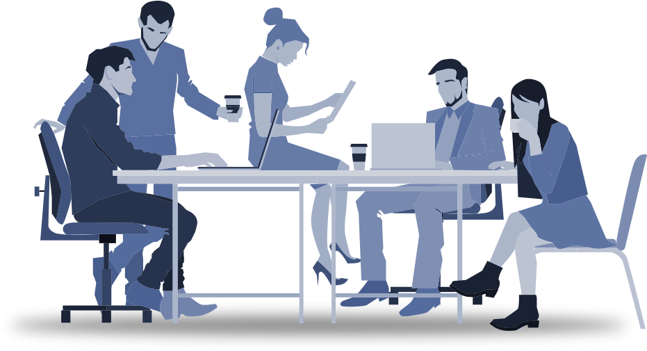
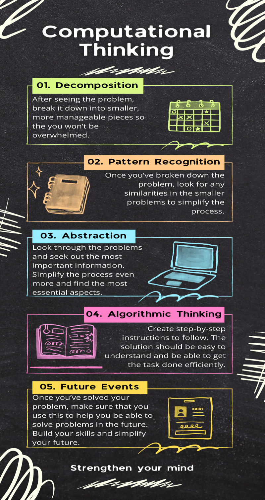

Seems like you've kind of got the idea of computational thinking. You can never get too much practice. Remember to use these steps throughout your life.
It doesn't matter whether the problem seems hard or easy. As long as you continue to practice and build up these skills, you will be able to tackle practically
any problem that comes in your way. You'll be able to filter out the tasks in smaller tasks depending on their similarities and differences. You can get a more
precise understanding of what you need to do, and then you can create your plan on how to complete the task in an efficient way. The instructions that you create
can be used to help you in other problems that may seem just like that one. Your instructions can also be used as a foundation or guidelines for people who have
problems that are just like that as well. The process itself isn't just helping you figure out a problem, but you're also setting a precedent for things that could
occur in the future. This will make everything even easier for you, because you'll have the skills to breakdown any problem and already have the knowledge of how to
get a problem done based on what you've already created. This concept started in computer science and grew to become an essential part of normal mental development.
This helps all ages, and all areas of study. For computer scientists, this is basically just what they do. Scientists and Engineers have to figure out the solutions to
problems and how to prepare for things that could happen in the future. Once they finish finding their solution, they set the basis for what needs to be done for situations
in the future. People who delve into literary works, break down what they read and find the most important parts of those works to see what the message of it is. Even artists
look into works and see the patterns and flow that go into the work that make it what it is. All of these different kinds of people, all share a similar way of getting their
work done and making sure to have what it takes to get through any mental task that may get in their way in the future.

We hope that you've not only learned something but that you've enjoyed your time here. These skills are very valuable and can help you with anything in life.
Whatever you plan on doing in the future, this can be applied in any field. Your mental growth starts here, and these skills will help you assess situations and
shoot for the stars! Lets quickly sum up the process that'll help you through the problems you may see in life for you.

Figure 3: Computational Thinking Summary
We're Finished!
If you want, you can go on to test your knowledge a little bit more!